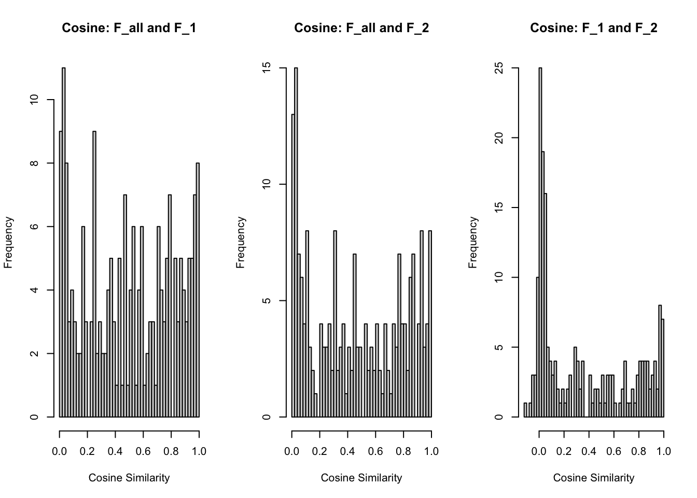

Validating the EBMF result using halves of the data
Ziang Zhang
2025-10-16
Last updated: 2025-10-16
Checks: 7 0
Knit directory: immgen-t-factors/analysis/
This reproducible R Markdown analysis was created with workflowr (version 1.7.2). The Checks tab describes the reproducibility checks that were applied when the results were created. The Past versions tab lists the development history.
Great! Since the R Markdown file has been committed to the Git repository, you know the exact version of the code that produced these results.
Great job! The global environment was empty. Objects defined in the global environment can affect the analysis in your R Markdown file in unknown ways. For reproduciblity it’s best to always run the code in an empty environment.
The command set.seed(1) was run prior to running the
code in the R Markdown file. Setting a seed ensures that any results
that rely on randomness, e.g. subsampling or permutations, are
reproducible.
Great job! Recording the operating system, R version, and package versions is critical for reproducibility.
Nice! There were no cached chunks for this analysis, so you can be confident that you successfully produced the results during this run.
Great job! Using relative paths to the files within your workflowr project makes it easier to run your code on other machines.
Great! You are using Git for version control. Tracking code development and connecting the code version to the results is critical for reproducibility.
The results in this page were generated with repository version c3e9deb. See the Past versions tab to see a history of the changes made to the R Markdown and HTML files.
Note that you need to be careful to ensure that all relevant files for
the analysis have been committed to Git prior to generating the results
(you can use wflow_publish or
wflow_git_commit). workflowr only checks the R Markdown
file, but you know if there are other scripts or data files that it
depends on. Below is the status of the Git repository when the results
were generated:
Ignored files:
Ignored: .Rhistory
Ignored: .Rproj.user/
Ignored: analysis/.Rhistory
Untracked files:
Untracked: .DS_Store
Untracked: .gitignore
Untracked: analysis/.DS_Store
Untracked: code/.DS_Store
Untracked: code/ROC.R
Untracked: code/analyze_protein.R
Untracked: code/analyze_protein.sbatch
Untracked: code/analyze_protein_selected.R
Untracked: code/analyze_protein_selected.sbatch
Untracked: code/halves_validation1.R
Untracked: code/halves_validation2.R
Untracked: code/replicate_whole_data.sbatch
Untracked: data/.DS_Store
Untracked: data/annot_level1.rds
Untracked: data/annot_level2.rds
Untracked: data/condition_broad.rds
Untracked: data/condition_broad_AUC.rds
Untracked: data/condition_broad_AUC_CD8.rds
Untracked: data/condition_detailed.rds
Untracked: data/condition_detailed_AUC.rds
Untracked: data/condition_detailed_AUC_CD8.rds
Untracked: data/factor_matching_results.csv
Untracked: data/fit1_summary.qs
Untracked: data/fit2_summary.qs
Untracked: data/flash_fixed_F_pm.rds
Untracked: data/flash_fixed_loading.rds
Untracked: data/flashier_snmf_summary.rds
Untracked: data/level_1_AUC.rds
Untracked: data/moran_list_umap.rds
Untracked: data/organ.rds
Untracked: data/organ_AUC.rds
Untracked: data/organ_AUC_healthy.rds
Untracked: data/organ_healthy.rds
Untracked: data/protein_flash_selected_summary.rds
Untracked: data/protein_mat.rds
Untracked: data/protein_mat_normalized.rds
Untracked: data/replicate_whole_data.sbatch
Untracked: data/seurat_meta.rds
Untracked: data/umap_result.rds
Unstaged changes:
Deleted: code/halves_validation.R
Note that any generated files, e.g. HTML, png, CSS, etc., are not included in this status report because it is ok for generated content to have uncommitted changes.
These are the previous versions of the repository in which changes were
made to the R Markdown
(analysis/half_validation_hungarian.rmd) and HTML
(docs/half_validation_hungarian.html) files. If you’ve
configured a remote Git repository (see ?wflow_git_remote),
click on the hyperlinks in the table below to view the files as they
were in that past version.
| File | Version | Author | Date | Message |
|---|---|---|---|---|
| Rmd | c3e9deb | Ziang Zhang | 2025-10-16 | workflowr::wflow_publish(files = "half_validation_hungarian.rmd") |
library(ggplot2)
library(dplyr)
Attaching package: 'dplyr'The following objects are masked from 'package:stats':
filter, lagThe following objects are masked from 'package:base':
intersect, setdiff, setequal, unionlibrary(fastTopics)
library(qs)qs 0.27.3. Announcement: https://github.com/qsbase/qs/issues/103library(cowplot)
library(ggrepel)
data_path <- "../data/"
code_path <- "../code/"
# data_path <- "data/"
# code_path <- "code/"
seurat_meta <- readRDS(paste0(data_path, "seurat_meta.rds"))
flashier_snmf_summary <- readRDS(paste0(data_path, "flashier_snmf_summary.rds"))
flashier_snmf_summary1 <- qs::qread(paste0(data_path, "fit1_summary.qs"))
flashier_snmf_summary2 <- qs::qread(paste0(data_path, "fit2_summary.qs"))F_all <- flashier_snmf_summary$F_pm
F_1 <- flashier_snmf_summary1$F_pm
F_2 <- flashier_snmf_summary2$F_pm
L_all <- flashier_snmf_summary$L_pm
L_1 <- flashier_snmf_summary1$L_pm
L_2 <- flashier_snmf_summary2$L_pm# Normalize each column to have unit variance
F_1 <- scale(F_1, center = FALSE, scale = TRUE)
F_2 <- scale(F_2, center = FALSE, scale = TRUE)
F_all <- scale(F_all, center = FALSE, scale = TRUE)Now, let’s match the factors from the whole data analysis (F_all) to the two halves (F_1 and F_2). This time, we will be using the Hungarian algorithm to find the optimal matching.
# Subset to have the common set of genes
common_genes_all_1 <- intersect(rownames(F_all), rownames(F_1))
common_genes_all_2 <- intersect(rownames(F_all), rownames(F_2))
common_genes_all <- intersect(common_genes_all_1, common_genes_all_2)
F_all <- F_all[common_genes_all, ]
F_1 <- F_1[common_genes_all, ]
F_2 <- F_2[common_genes_all, ]cor_1 <- cor(F_all, F_1)
assignment_problem_1 <- RcppHungarian::HungarianSolver(-1*cor_1)
cor_2 <- cor(F_all, F_2)
assignment_problem_2 <- RcppHungarian::HungarianSolver(-1*cor_2)
# summarize the results into a data frame
match_results <- data.frame(
Factor_All = 1:ncol(F_all),
Best_Match_F1 = assignment_problem_1$pairs[,2],
Best_Match_F2 = assignment_problem_2$pairs[,2],
Correlation_F1 = cor_1[assignment_problem_1$pairs],
Correlation_F2 = cor_2[assignment_problem_2$pairs]
)
match_results[c(1,2,3,5,22,58, 68, 171), 1:5] Factor_All Best_Match_F1 Best_Match_F2 Correlation_F1 Correlation_F2
1 1 1 1 0.9677840 0.9801622
2 2 2 2 0.9756570 0.9811287
3 3 28 3 0.7752517 0.6414919
5 5 5 5 0.7889096 0.5556947
22 22 142 21 0.5044927 0.6115533
58 58 42 51 0.8977071 0.7403161
68 68 73 97 0.8335833 0.8691481
171 171 23 66 0.5438985 0.6863297This table should be a useful reference, let’s save it as a csv file.
write.csv(match_results, file = paste0(data_path, "factor_matching_results.csv"), row.names = FALSE)Take a look at the distribution of the correlations:
par(mfrow=c(1,2))
hist(match_results$Correlation_F1, breaks = 50, main = "Corr: F_all and F_1", xlab = "Correlation")
hist(match_results$Correlation_F2, breaks = 50, main = "Corr: F_all and F_2", xlab = "Correlation")
par(mfrow=c(1,1))Let’s find the factors in F_all that have a good match (correlation > 0.5) in either F_1 or F_2.
match_results$MaxCorr <- pmax(match_results$Correlation_F1, match_results$Correlation_F2)
# select factors with correlation > 0.5
selected_factors_F_all <- match_results %>%
filter(MaxCorr > 0.5)
nrow(selected_factors_F_all)[1] 122Bar plot to visualize the correlation between the matched factors and each factor in F_all:
plot_F1 <- ggplot(selected_factors_F_all, aes(x = Factor_All, y = Correlation_F1)) +
geom_bar(stat = "identity") +
geom_hline(yintercept = 0.5, linetype = "dashed", color = "red") +
labs(title = "Best Match Correlation for Each Factor in F_all vs F_1",
x = "Factor in F_all",
y = "Best Match Correlation with F_1") +
theme_minimal()
plot_F2 <- ggplot(selected_factors_F_all, aes(x = Factor_All, y = Correlation_F2)) +
geom_bar(stat = "identity") +
geom_hline(yintercept = 0.5, linetype = "dashed", color = "red") +
labs(title = "Best Match Correlation for Each Factor in F_all vs F_2",
x = "Factor in F_all",
y = "Best Match Correlation with F_2") +
theme_minimal()
gridExtra::grid.arrange(plot_F1, plot_F2, nrow = 2)
How many large pve factors are there in the whole data analysis?
sum(which(flashier_snmf_summary$pve > 1e-4) %in% selected_factors_F_all$Factor_All)/sum(flashier_snmf_summary$pve > 1e-4)[1] 0.75Structure plot:
# normalize by the 99 percent quantile in each column
D_all <- diag(1/apply(L_all, 2, function(x) quantile(x, 0.99)))
L_all <- L_all %*% D_all
D_1 <- diag(1/apply(L_1, 2, function(x) quantile(x, 0.99)))
L_1 <- L_1 %*% D_1
D_2 <- diag(1/apply(L_2, 2, function(x) quantile(x, 0.99)))
L_2 <- L_2 %*% D_2## structure plot for all the data
set.seed(12345)
annotation_sub <- seurat_meta$annotation_level1[match(rownames(L_all), seurat_meta$cellID)]
cells <- which(annotation_sub == "CD4" | annotation_sub == "CD8")
cells <- sample(cells,1e5)
cells <- sort(c(cells,which(annotation_sub != "CD4" & annotation_sub != "CD8")))
selected_all_Factors <- c(22, 29, 30, 58, 68, 171)
L_all_plot <- L_all[cells,selected_all_Factors]
colnames(L_all_plot) <- paste0("K",selected_all_Factors)
p_all <- structure_plot(L_all_plot, gap = 10, n = 6000,
topics = paste0("K",selected_all_Factors),
grouping = annotation_sub[cells]) +
labs(y = "membership",color = "",fill = "") +
ylim(0,3) +
theme(legend.position = "bottom")Warning: `aes_string()` was deprecated in ggplot2 3.0.0.
ℹ Please use tidy evaluation idioms with `aes()`.
ℹ See also `vignette("ggplot2-in-packages")` for more information.
ℹ The deprecated feature was likely used in the fastTopics package.
Please report the issue at
<https://github.com/stephenslab/fastTopics/issues>.
This warning is displayed once every 8 hours.
Call `lifecycle::last_lifecycle_warnings()` to see where this warning was
generated.## structure plot for the first half data
selected_1_Factors <- selected_factors_F_all$Best_Match_F1[match(selected_all_Factors,selected_factors_F_all$Factor_All)]
annotation_sub1 <- seurat_meta$annotation_level1[match(rownames(L_1), seurat_meta$cellID)]
cells1 <- which(annotation_sub1 == "CD4" | annotation_sub1 == "CD8")
cells1 <- sample(cells1,5e4)
cells1 <- sort(c(cells1,which(annotation_sub1 != "CD4" & annotation_sub1 != "CD8")))
L_1_plot <- L_1[cells1, selected_1_Factors]
colnames(L_1_plot) <- paste0("K",selected_1_Factors)
p_1 <- structure_plot(L_1_plot, gap = 10, n = 6000,
topics = paste0("K",selected_1_Factors),
grouping = annotation_sub1[cells1]) +
labs(y = "membership",color = "",fill = "") +
ylim(0,3) +
theme(legend.position = "bottom")
## structure plot for the second half data
selected_2_Factors <- selected_factors_F_all$Best_Match_F2[match(selected_all_Factors, selected_factors_F_all$Factor_All)]
annotation_sub2 <- seurat_meta$annotation_level1[match(rownames(L_2), seurat_meta$cellID)]
cells2 <- which(annotation_sub2 == "CD4" | annotation_sub2 == "CD8")
cells2 <- sample(cells2,5e4)
cells2 <- sort(c(cells2,which(annotation_sub2 != "CD4" & annotation_sub2 != "CD8")))
L_2_plot <- L_2[cells2, selected_2_Factors]
colnames(L_2_plot) <- paste0("K",selected_2_Factors)
p_2 <- structure_plot(L_2_plot, gap = 10, n = 6000,
topics = paste0("K",selected_2_Factors),
grouping = annotation_sub2[cells2]) +
labs(y = "membership",color = "",fill = "") +
ylim(0,3) +
theme(legend.position = "bottom")plot_grid(p_all, p_1, p_2, nrow = 3)Ignoring unknown labels:
• colour : ""Warning: Removed 31 rows containing missing values or values outside the scale range
(`geom_col()`).Ignoring unknown labels:
• colour : ""Warning: Removed 96 rows containing missing values or values outside the scale range
(`geom_col()`).Ignoring unknown labels:
• colour : ""Warning: Removed 27 rows containing missing values or values outside the scale range
(`geom_col()`).
sessionInfo()R version 4.5.1 (2025-06-13)
Platform: aarch64-apple-darwin20
Running under: macOS Sequoia 15.6.1
Matrix products: default
BLAS: /Library/Frameworks/R.framework/Versions/4.5-arm64/Resources/lib/libRblas.0.dylib
LAPACK: /Library/Frameworks/R.framework/Versions/4.5-arm64/Resources/lib/libRlapack.dylib; LAPACK version 3.12.1
locale:
[1] en_US.UTF-8/en_US.UTF-8/en_US.UTF-8/C/en_US.UTF-8/en_US.UTF-8
time zone: America/Chicago
tzcode source: internal
attached base packages:
[1] stats graphics grDevices utils datasets methods base
other attached packages:
[1] ggrepel_0.9.6 cowplot_1.2.0 qs_0.27.3 fastTopics_0.7-25
[5] dplyr_1.1.4 ggplot2_4.0.0
loaded via a namespace (and not attached):
[1] gtable_0.3.6 xfun_0.53 bslib_0.9.0
[4] htmlwidgets_1.6.4 RApiSerialize_0.1.4 lattice_0.22-7
[7] quadprog_1.5-8 vctrs_0.6.5 tools_4.5.1
[10] generics_0.1.4 parallel_4.5.1 tibble_3.3.0
[13] pkgconfig_2.0.3 Matrix_1.7-3 data.table_1.17.8
[16] SQUAREM_2021.1 RColorBrewer_1.1-3 S7_0.2.0
[19] RcppParallel_5.1.11-1 lifecycle_1.0.4 truncnorm_1.0-9
[22] compiler_4.5.1 farver_2.1.2 stringr_1.5.2
[25] git2r_0.36.2 progress_1.2.3 RhpcBLASctl_0.23-42
[28] httpuv_1.6.16 htmltools_0.5.8.1 sass_0.4.10
[31] yaml_2.3.10 lazyeval_0.2.2 plotly_4.11.0
[34] later_1.4.4 pillar_1.11.1 crayon_1.5.3
[37] jquerylib_0.1.4 whisker_0.4.1 tidyr_1.3.1
[40] uwot_0.2.3 cachem_1.1.0 gtools_3.9.5
[43] tidyselect_1.2.1 digest_0.6.37 Rtsne_0.17
[46] stringi_1.8.7 reshape2_1.4.4 purrr_1.1.0
[49] ashr_2.2-63 labeling_0.4.3 rprojroot_2.1.1
[52] fastmap_1.2.0 grid_4.5.1 cli_3.6.5
[55] invgamma_1.2 magrittr_2.0.4 withr_3.0.2
[58] prettyunits_1.2.0 scales_1.4.0 promises_1.3.3
[61] rmarkdown_2.30 httr_1.4.7 gridExtra_2.3
[64] workflowr_1.7.2 hms_1.1.3 stringfish_0.17.0
[67] pbapply_1.7-4 evaluate_1.0.5 RcppHungarian_0.3
[70] knitr_1.50 irlba_2.3.5.1 viridisLite_0.4.2
[73] rlang_1.1.6 Rcpp_1.1.0 mixsqp_0.3-54
[76] glue_1.8.0 rstudioapi_0.17.1 jsonlite_2.0.0
[79] plyr_1.8.9 R6_2.6.1 fs_1.6.6